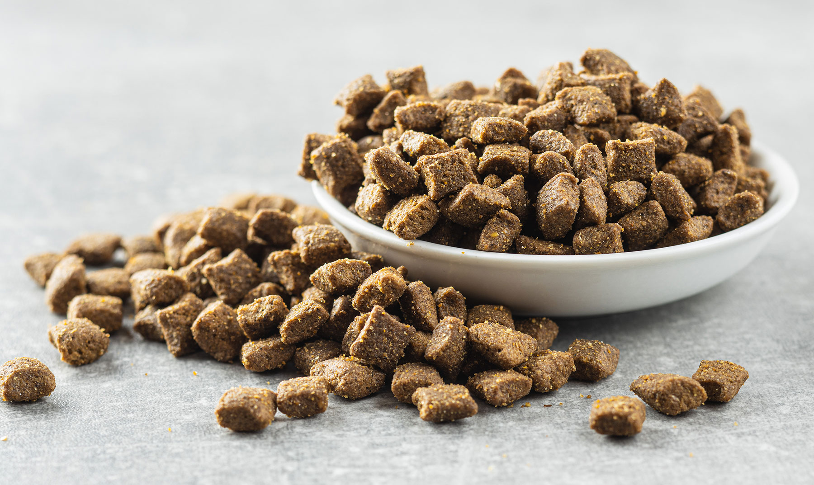

Pet House Products
Food & Treats

your pets the nutrition they deserve with our wide range of premium foods and irresistible treats. From grain‑free kibble and raw diets to training snacks and dental chews, we carry trusted brands that support every life stage and dietary need.
Toys & Entertainment

Keep boredom away with our fun and stimulating toys! Explore squeaky toys, chew toys, puzzle games, feather teasers, and interactive gadgets designed to keep pets active, engaged, and mentally sharp.
Beds, Crates & Comfort

Help your pets rest in style with cozy beds, supportive mattresses, soft blankets, and safe crates. Whether your pet loves curling up or stretching out, we have comfort solutions for every personality.
Grooming Essentials
Maintain a clean and healthy coat with our grooming products, including shampoos, brushes, nail clippers, de‑shedding tools, and pet-friendly hygiene items. Perfect for keeping your pet looking and feeling their best.
Collars, Leads & Accessories
Explore stylish and durable collars, leads, harnesses, and ID tags. Our accessories blend safety, comfort, and personality—so your pet can show off their style on every walk.
Health & Wellness Supplies
Support your pet’s wellbeing with vitamins, supplements, flea & tick protection, dental care, and first-aid essentials. We offer veterinarian-recommended products to ensure pets stay healthy year-round.